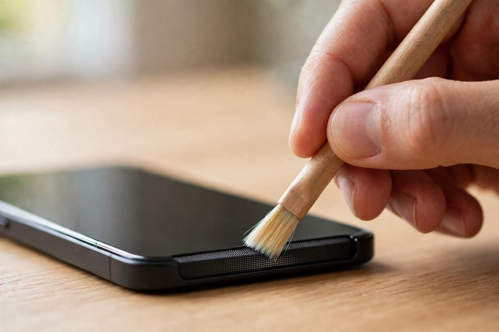
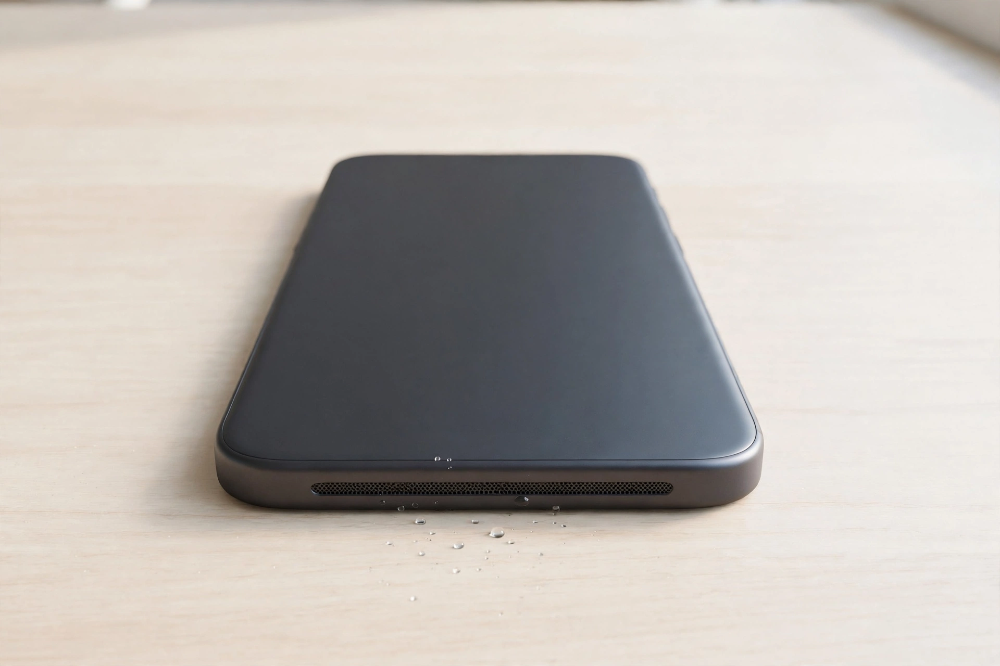
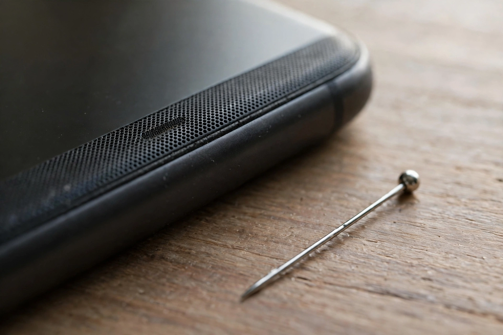

Why Your Phone Speaker May Sound Different
A phone speaker can sound different for many small reasons. Dust is the most common one. Tiny bits of dust and lint collect in the small holes of the speaker grille. Over time, the dust blocks the sound, and your phone sounds quiet or muffled. This happens slowly, so you may not notice it at first.
Water can also change the sound. If water gets into the speaker, it can sit on the small parts inside and make the sound dull or crackly. The sound often gets better as it dries. A case or a screen protector can block the sound too, if it covers the speaker holes.
Software can play a part as well. A low volume setting, a quiet mode, or an app with its own volume control can make the speaker sound weak. To learn what each sound means, read our guide on why your phone speaker crackles.
Age and wear can also change the sound a little. After years of use, a speaker may not sound as loud as when the phone was new. Cleaning will not fix wear, but it can help if dust is part of the problem.
Before You Start: Check These Things
Before you clean anything, check the simple things first. Turn the volume up and play a song. Then make a call on speaker and listen. If the sound is weak in both, the speaker may need cleaning. If it is weak only in calls, the problem may be the earpiece or the call settings.
Check that silent mode and do not disturb are off, and check the volume in the settings. Also check that no Bluetooth device is connected, because the sound may be going to earbuds or a car speaker.
Look at the speaker grille in good light. If you see dust or lint in the holes, cleaning will help. If the grille looks clean, the problem may be water, a setting, or damage inside the phone. Our guide on a phone speaker muffled explains more signs.
Turn the phone off and take it out of its case, so you can see the grille clearly.
How to Clean Phone Speakers at Home
Start with a soft dry brush. A clean soft toothbrush or a small makeup brush works well. Brush the grille gently, in short strokes, with the speaker facing down, so the dust falls out. Do not press hard, because hard pressure can push dust deeper inside.
Next, wipe the area around the speaker with a dry soft cloth. Do not use a wet cloth on the grille, because water can run into the speaker. If there is a mark on the phone body, dampen a small corner of the cloth very lightly, wipe the mark, and dry it at once.
For dust in the grille holes, you can use a small piece of soft tape. Press it lightly over the grille and lift it off. The tape picks up loose dust. Do not press hard, and do not use strong tape, because it can leave glue on the grille.
The grille needs gentle care. Our guide on how to clean a phone speaker grille shows the same steps in more detail. If you clean a portable speaker too, read our guide on how to clean a portable speaker for the steps that work on a larger grille.
After brushing, play a song to test the sound. If it is clearer, you are done. If it is still muffled, use the sound clean in the next section.

Can a Cleaning Sound Help Remove Dust and Water?
Yes, sound can help when the problem is water or loose dust that a brush cannot reach. Sound makes the speaker move, and the movement shakes the water and dust out of the grille. It cannot fix damage inside the phone or a torn grille, but it is a safe first step for water and dust.
Our free tool has three modes. The deep clean mode plays a pulsed 165 Hz tone for 60 seconds to shake out water. The dust sweep plays tones from 200 to 1500 Hz to loosen dust in the grille. The vibration mode uses 80 Hz and adds vibration on phones that support it. You can run the tool from our deep dust clean page, right in your browser, with no app to install.
To use it, turn the volume up, place the phone with the speaker facing down, and let the tone run for the full time. After it stops, play a song to test the sound. If it is better but not perfect, run it once more. Do not run it many times in a row, because if the sound does not improve, the problem is likely not dust or water.

Mistakes That Can Damage Your Phone Speaker
The most common mistake is pushing a pin, a needle, or a toothpick into the grille holes. Sharp tools can tear the thin mesh and damage the speaker behind it.
Do not pour water into the speaker or wash it under a tap. Water can damage the parts inside, even on a phone that claims to resist water. Do not use strong cleaners, bleach, or alcohol wipes on the grille either.
Do not use compressed air up close. A strong jet of air can push dust deeper into the grille instead of out of it. A soft brush is safer and works better for dust on the surface.
Do not open the phone yourself to clean the speaker. The parts inside are small and easy to break, and opening the phone can void the warranty.

What If Your Speaker Still Sounds Muffled?
First, test the speaker with a song and with a call. Play a song at full volume, then make a call on speakerphone. If the sound is bad in both, the speaker is the likely cause. If it is bad only in calls, check the call settings.
Check the volume and silent mode again. Make sure the media volume is up, not just the ring volume, and that silent mode and do not disturb are off.
Restart the phone. A restart clears small software problems that can make the sound weak. After the restart, play a song again to test the sound.
Take the case off and check the screen protector. A thick case or a screen protector that covers the speaker holes can block the sound. Test the speaker without the case.
Try safe mode to rule out an app. Safe mode starts the phone with only the built-in apps, so if the sound is fine in safe mode, an app you installed may be the cause. Remove apps you installed recently, one at a time, and test the sound after each one.
Check for signs of water damage. Look for fog under the camera lens, a phone that feels warm for no reason, or a battery that drains fast. If you see these signs, do not charge the phone until it is dry.
If none of these steps help, visit a repair shop. A technician can test the speaker and tell you if it is damaged or if a part needs to be replaced.
Simple Habits to Keep Your Speakers Clean
Keep your phone out of dusty places when you can, and do not carry it loose in a bag with sand or lint. A case with open speaker holes protects the phone without blocking the sound. Clean the grille once a month with a soft dry brush.
Keep the phone dry. Do not use it in the rain for long, and do not take it into a steamy bathroom. If it does get wet, dry it at once with a soft cloth and let it dry fully before you charge it.
Do not press the phone face down on a dirty table, because dust and crumbs can get into the grille. Put it face up, or in a pocket that is clean and dry. If you want a full routine for any speaker, read our guide on how to clean a speaker safely at home.
Frequently Asked Questions
No. Do not pour water into the speaker or wash it under a tap, even if the phone claims to resist water. Water can damage the parts inside. Use a soft dry brush and a dry cloth instead. If water got into the speaker, use a cleaning tone and let the phone dry fully before you charge it.
No, a cleaning tone at normal volume is safe for most phone speakers. The tone only moves the speaker the way music does. Do not run it many times in a row if the sound does not improve, because the problem is likely not dust or water. If the speaker makes a crackling sound, stop and get it checked.
Once a month is enough for most phones. Clean it sooner if you use the phone in a dusty place, at the beach, or if you notice the sound getting quieter. A quick brush takes less than a minute, so it is easy to make it a habit.
Water can sit on the small parts inside the speaker and block the sound. The sound often gets better as the water dries, but it can take hours. Let the phone dry in a place with moving air, and use a cleaning tone to shake the water out. Do not charge the phone until it is fully dry.
Do not use pins, needles, or toothpicks in the grille holes, and do not pour water into the speaker. Do not use strong cleaners, bleach, or alcohol wipes, and do not use compressed air up close. A soft dry brush and a dry cloth are enough for most cases.
Previous Post: How to Clean Portable Speaker Safely at Home
Next Post: How to Fix Phone Speaker Distortion (7 Easy Fixes)